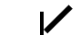
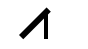

Apple and Microsoft rasterizers interpret some truetype composites differently and this can result in radically different displays of a character. Here is a character designed to be displayed on a Mac, the composite consists of two components, one of which has been rotated and scaled. If Apple's definition of composite behavior is followed then the two strokes will just barely touch at the left edge. If MicroSoft's is followed then the diagonal stroke will be offset from the vertical by a considerable amount.
 |
 |
Glyph 11: off = 0x0000016E, len = 34 numberOfContours: -1 (Composite) xMin: 810 yMin: -1 xMax: 1256 yMax: 446 0: Flags: 0x00A7 Glyf Index: 6 X WOffset: 810 Y WOffset: 57 X Scale: 1.060608 Scale 01: -1.060669 Scale 10: 1.060608 Y Scale: 1.060608 Other: Round X,Y to Grid 1: Flags: 0x0007 Glyf Index: 6 X WOffset: 1156 Y WOffset: 0 Other: Round X,Y to Grid |
On the right is a dump (using microsoft's ttfdump program) of the corresponding glyph. As you can see it consists of two components, the first has been scaled by 1.5 and then rotated 45°, its horizontal offset is 810. The other is neither rotated nor scaled and its horizontal offset is 1156. According to Apple the first component should have its offset scaled by 1.5 (yielding an offset of 1215 which is just enough for the two glyphs to kiss). According to MicroSoft the offset is not scaled.
This problem only arises if a composite is scaled (actually: has a transformation matrix whose determinant is not 1, so skewing is also an issue but rotating and flipping are not), so it is fairly rare.
The OpenType spec now provides two bits (in the composite flags array) to disambiguate this case (neither bit is set in the above example, hence the problem). If bit 0x800 is set then the rasterizer should use Apple's definition, while if bit 0x1000 is set MicroSoft's (and now OpenType's default) definition. If neither bit is set then the platform's default will be used. Apple does not document these bits on their site, but they do support them (At least in Mac OS/9 and Mac OS/X). On the other hand, MicroSoft does document the bits, but the rasterizer on my Win/Me box does not support Apple's rules.
Apple documents a moderately complex algorithm for determining the factor
by which each offset should be scaled. This algorithm does not match the
behavior of Apple's rasterizer under Mac OS/9 and Mac OS/X. I have determined
empirically that the proper scaling factors are:
horizontalScale = sqrt(XScale*XScale +
Scale01*Scale01)
verticalScale = sqrt(YScale*YScale +
Scale10*Scale10)
(using the same notation as ttfdump). Basically, this means that the horizontal
scale factor is the length of the vector that results from applying the
transformation matrix to (1,0).
Here is a collection of the permutations of a font which displays the problem. The characters B-L contain scaled or rotated or flipped components. They also contain another component to show where the transformed component should line up if Apple's rules are followed (as in the example at the top of the page, which may be found at "F").
| Apple Rules | MS Rules | Unspecified | |
|---|---|---|---|
Windows font |
CompositeMac.ttf | CompositeMS.ttf | CompositeAmbiguous.ttf |
Mac resource font |
CompositeMac.ttf.bin | CompositeMS.ttf.bin | CompositeAmbiguous.ttf.bin |
Mac dfont (OS/X) |
CompositeMac.dfont | CompositeMS.dfont | CompositeAmbiguous.dfont |
(Do not try editing these fonts with PfaEdit. PfaEdit automagically will add the OpenType bit to the flags array).